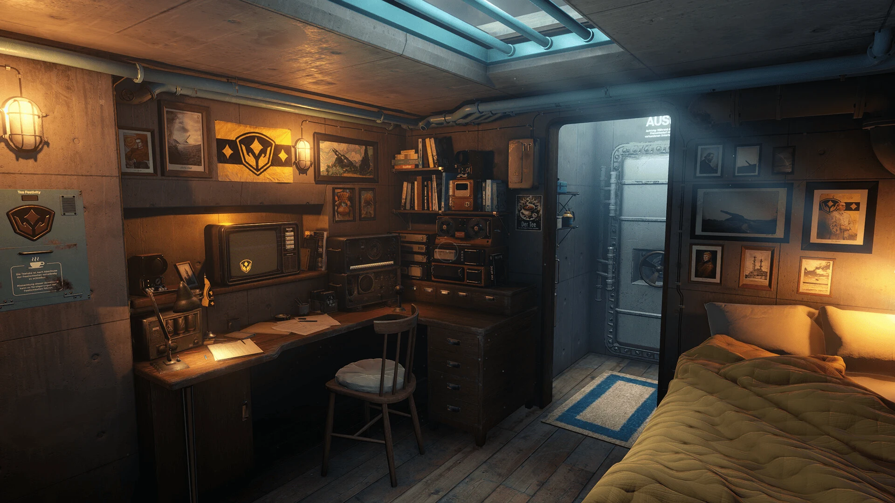
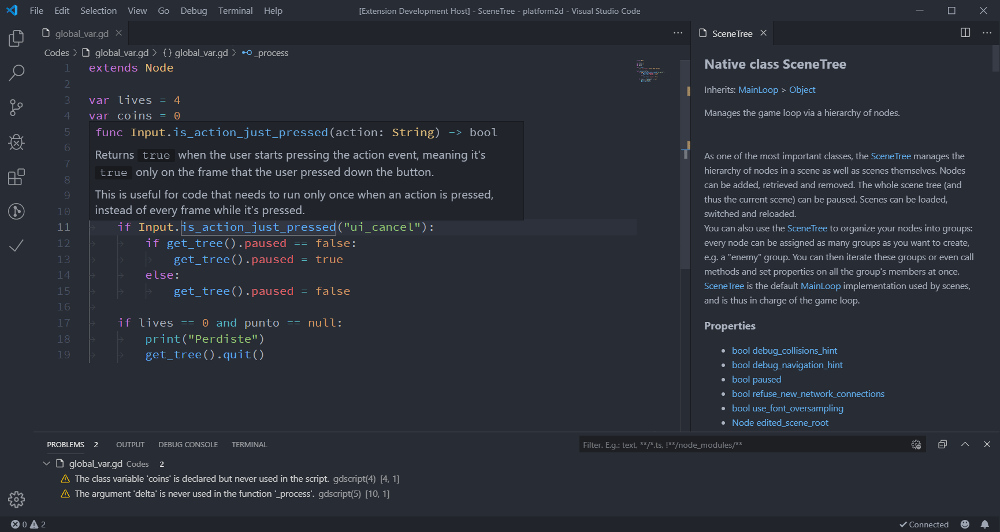

Giới thiệu về Godot
Bài viết này giúp bạn xác định xem Godot có phù hợp với bạn hay không. Chúng tôi sẽ giới thiệu một số tính năng chính của engine để bạn hình dung những gì có thể đạt được với nó và trả lời các câu hỏi như "tôi cần biết gì để bắt đầu?".
Đây hoàn toàn không phải là bản tổng quan đầy đủ. Chúng tôi sẽ giới thiệu thêm nhiều tính năng khác trong loạt bài nhập môn này.
Godot là gì?
Godot là một game engine 2D và 3D đa năng được thiết kế để hỗ trợ mọi loại dự án. Bạn có thể dùng nó để tạo game hoặc ứng dụng rồi phát hành trên máy tính, di động cũng như trên web.
Bạn cũng có thể tạo game console bằng nó, mặc dù bạn sẽ cần kỹ năng lập trình vững hoặc một nhà phát triển để port game cho bạn.
Ghi chú
Để biết thông tin về hỗ trợ console, xem website Godot.
Engine có thể làm gì?
Godot ban đầu được phát triển nội bộ bởi một studio game ở Argentina. Quá trình phát triển bắt đầu từ năm 2001, và engine đã được viết lại và cải thiện vượt bậc kể từ khi phát hành mã nguồn mở vào năm 2014.
Một số ví dụ về game được làm bằng Godot gồm Cassette Beasts, PVKK và Usagi Shima. Về ứng dụng, chương trình vẽ pixel art mã nguồn mở Pixelorama được xây dựng trên Godot, và trình tạo RPG voxel RPG in a Box cũng vậy. Bạn có thể tìm thêm nhiều ví dụ khác tại Official Showcase.

Usagi Shima

Cassette Beasts

PVKK: Planetenverteidigungskanonenkommandant

RPG in a Box
Nó hoạt động và trông như thế nào?
Godot đi kèm một trình chỉnh sửa game đầy đủ với các công cụ tích hợp để đáp ứng những nhu cầu phổ biến nhất. Nó bao gồm trình soạn thảo code, trình chỉnh sửa hoạt ảnh, trình chỉnh sửa tilemap, trình chỉnh sửa shader, trình gỡ lỗi, trình profiler và nhiều thứ khác.

Đội ngũ phát triển luôn nỗ lực mang đến một trình chỉnh sửa game giàu tính năng với trải nghiệm người dùng nhất quán. Dù luôn còn chỗ để cải thiện, giao diện người dùng vẫn liên tục được tinh chỉnh.
Tất nhiên, nếu muốn, bạn có thể làm việc với các chương trình bên ngoài. Chúng tôi chính thức hỗ trợ import các scene 3D được thiết kế trong Blender và duy trì các plugin để viết code GDScript và C# trong VSCode và Emacs. Chúng tôi cũng hỗ trợ Visual Studio cho C# trên Windows.

Ngôn ngữ lập trình
Hãy cùng nói về các ngôn ngữ lập trình có sẵn.
Bạn có thể lập trình game bằng GDScript, một ngôn ngữ dành riêng cho Godot, tích hợp chặt chẽ và có cú pháp gọn nhẹ, hoặc C#, ngôn ngữ phổ biến trong ngành game. Đây là hai ngôn ngữ scripting chính mà chúng tôi hỗ trợ.
Với công nghệ GDExtension, bạn cũng có thể viết gameplay hoặc các thuật toán hiệu năng cao bằng C++ hoặc các ngôn ngữ khác mà không cần biên dịch lại engine. Bạn có thể dùng công nghệ này để tích hợp thư viện bên thứ ba và các bộ công cụ phát triển phần mềm (SDK) khác vào engine.
Tất nhiên, bạn cũng có thể trực tiếp thêm module và tính năng vào engine, vì nó hoàn toàn miễn phí và mã nguồn mở.
Tôi cần biết gì để sử dụng Godot?
Godot là một game engine giàu tính năng. Với hàng nghìn tính năng, có rất nhiều thứ để học. Để tận dụng tối đa, bạn cần có nền tảng lập trình tốt. Dù chúng tôi cố gắng làm cho engine dễ tiếp cận, bạn sẽ được lợi rất nhiều nếu trước tiên biết cách tư duy như một lập trình viên.
Godot dựa trên mô hình lập trình hướng đối tượng. Nắm vững các khái niệm như lớp và đối tượng sẽ giúp bạn viết code hiệu quả với nó.
Nếu bạn hoàn toàn mới với lập trình, Learn GDScript From Zero của GDQuest là một bài hướng dẫn tương tác miễn phí, mã nguồn mở dành cho người mới bắt đầu hoàn toàn, giúp học lập trình bằng ngôn ngữ GDScript của Godot. Nó có sẵn dưới dạng ứng dụng desktop hoặc trên trình duyệt.
Chúng tôi sẽ cung cấp thêm cho bạn các tài liệu học tập dành riêng cho Godot trong Học các tính năng mới.
Trong phần tiếp theo, bạn sẽ có cái nhìn tổng quan về các khái niệm thiết yếu của engine.